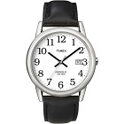
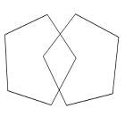

1、现在是哪一年？ 回答正确 回答错误
2、今天是几月份？ 回答正确 回答错误
3、今天是星期几？ 回答正确 回答错误
4、现在是什么季节 回答正确 回答错误
5、现在是几号？ 回答正确 回答错误
6、我们现在是哪个国家？ 回答正确 回答错误
7、我们现在是在哪个城市？ 回答正确 回答错误
8、我们现在在哪个城区？ 回答正确 回答错误
9、这里是哪家医院？ 回答正确 回答错误
10、这里是第几层楼？ 回答正确 回答错误
11、现在我说三样东西，我说完你重复一遍并记住，2分钟后还要问你：“树木”、“钟表”、“汽车” 重复出3个 重复出2个 重复出1个 重复出0个
12、请你算一算：100-7=____ 93-7=___ 86-7=___ 79-7=___ 72-7=___ 算对5个 算对4个 算对3个 算对2个 算对1个 算对0个
13、现在请你说出刚才让你记住的东西？ 说出3个 说出2个 说出1个 说出0个
14、这个东西是什么？  回答正确 回答错误
15、这个东西是什么？ 回答正确 回答错误
16、跟着我说：四十四只石狮子 说话清晰 不清晰
17、【情景模拟】我给你一张纸请按我说的去做：现在开始:"用右手拿着这张纸，用两只手将它对折起来，放在你的左腿上“。【每做到一步得一分，请家属根据具体情况酌情打分】 3分 2分 1分 0分
18、请您念一念这句话：”请闭上你的眼睛“，并按上面的去做【根据具体的执行判断给分，下面选项对应的病情一次变差，请家属酌情打分】 3分 2分 1分 0分
19、请你写或说一个完整的句子【句子要求符合日常说话的结构和逻辑，家属根据所说句子的完整程度酌情打分】 句子完整且正常 句子不正常
20、请你照这个样子滑下来。  图形正确 图形不完整
总得分：0